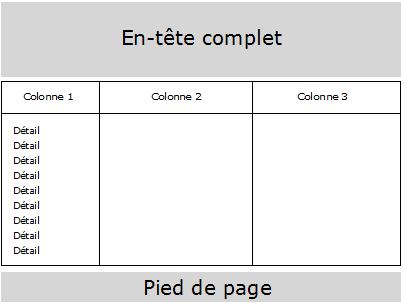
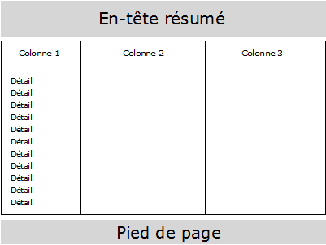
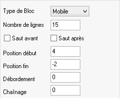
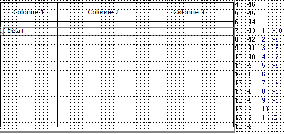
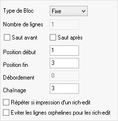
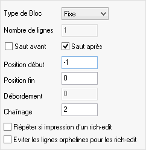
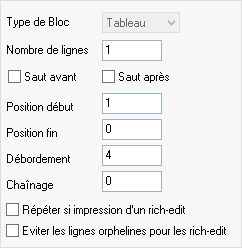

Cette rubrique explique comment obtenir que l'exécuteur de masques Ymig ajuste automatiquement la hauteur d'un bloc en fonction de la place encore disponible dans la page imprimée. Pour clarifier la présentation qui suit, nous allons travailler sur l'exemple simple suivant :
Trois blocs (hors blocs détails) sont imprimés sur chaque page de 20 lignes : un en-tête de page, un tableau (bloc numéro 3) et un pied de page de 2 lignes (bloc numéro 4).
Sur la toute première page de l'état, l'en-tête imprimé est une version "complète" qui occupe 5 lignes (bloc numéro 1).
Sur les pages suivantes, l'en-tête est une version "résumé" qui n'occupe plus que 3 lignes (bloc numéro 2).
On veut que le bloc central occupe toute la place restante, soit 13 lignes (20-5-2) sur la page 1 et 15 lignes (20-3-2) sur les pages suivantes :


Les règles à respecter pour obtenir ce type d'état sont les suivantes :
Tout d'abord, Ymig ne procède à un ajustement automatique de hauteur que dans un cas précis : celui d'un bloc de type Mobile contenant un objet Tableau.
Dans notre exemple, c'est le bloc numéro 3 qui inclut le tableau et dont la hauteur va varier. Il doit être déclaré de type Mobile car sa position va varier dans la page. Ici, il ne sera imprimé qu'une seule fois par page.
Remarque :
Un bloc de ce type ne peut contenir qu’un unique objet Tableau (si la page doit contenir d'autres tableaux, placez-les dans autant d'autres blocs).
Si deux ou plusieurs tableaux sont inclus dans un même bloc Mobile, une erreur est détectée à la compilation du masque.
Cet ajustement automatique n'est pas paramétrable. Autrement dit, tout bloc de type Mobile contenant un objet Tableau est susceptible d’être réduit si la place manque pour imprimer le bloc en totalité. Une réduction de taille n’est jamais appliquée aux blocs fixes ou de fond.
Ensuite, Ymig n'augmente jamais la hauteur du bloc et du tableau. Celle-ci ne peut que diminuer.
Dans Xwin, ceci a une conséquence directe sur le paramétrage du bloc contenant le tableau et sur le dessin du tableau dans ce bloc :
Le paramétrage du bloc doit être basé sur le cas où il occupe la plus grande hauteur :
Le Nombre de lignes doit être positionné à la valeur maximale possible.
Dans notre exemple, il doit être (au minimum) de 15 lignes. Pour la page 1, Ymig réduira automatiquement ce nombre à 13 lignes.
La Position Début doit être positionnée à la valeur minimale possible.
Dans notre exemple, elle doit valoir 4 (au maximum : voir remarque ci-dessous). Pour la page 1, le numéro de ligne courante vaudra déjà 6 après l'impression du bloc d'en-tête complet ; l'impression du bloc 3 commencera donc en ligne 6.
Remarque : La position Fin n'est pas dépendante de la page imprimée.

Le tableau doit être dessiné en conséquence :
Dans notre exemple (bloc de 15 lignes) :

Remarque :
Le nombre de lignes du bloc et du tableau est recalculé à l’exécution en tenant compte de la ligne imprimée courante au moment de l’impression du bloc (dans l’exemple, cette ligne variera entre la page 1 et les suivantes selon la hauteur du bloc d’en-tête). Si la ligne courante est supérieure à la Position début du bloc, la taille du bloc et du tableau est réduite de la différence. Sinon, le bloc est imprimé tel quel.
En pratique, Ymig réduit d'abord le tableau puis le bloc en conséquence. S'il reste de la place libre (zone vide d'objets) entre la fin du tableau et la fin du bloc, Ymig rogne d'abord sur cette place libre avant de réduire la hauteur du bloc.
Dans notre exemple, la valeur de la Position début du bloc 3 (4) est exactement égale à la Position fin de l'en-tête réduite + 1. Il est toutefois possible de spécifier une valeur inférieure (1 par exemple), à condition bien entendu d'augmenter la taille du bloc et le dessin du tableau en conséquence. Dans ce cas, la taille du tableau et du bloc sera réduite à l'exécution, quelque soit la page imprimée.
L’intérêt de spécifier 1 plutôt que 4 comme Position début est que cette valeur fonctionnera quelle que soit la taille des blocs d’en-tête. Ainsi, une diminution de la hauteur du bloc d'en-tête réduit n’aura aucune conséquence sur le paramétrage du bloc contenant le tableau.
En dehors du cas où le bloc contenant le tableau comporte également des objets multi-ligne, la position de départ du tableau dans le bloc ne change pas. Seule sa hauteur peut être diminuée.
Par souci de simplicité, le bloc 3 de cet exemple ne contient pas d'autres objets que l'objet Tableau. Si d'autres objets existent dans le même bloc et si le tableau est réduit :
Les objets situés strictement derrière le tableau (i.e. dont l'ordonnée début est strictement supérieure à l'ordonnée fin du tableau) sont automatiquement remontés de la valeur de la réduction (remarque : les positions sont calculées après application des attributs dynamiques).
Les autres objets (même ceux situés initialement sur les côtés du tableau, dans la partie tronquée du fait de sa réduction) ne sont pas déplacés.
Ymig ne réduit pas la hauteur d'un tableau en dessous d'une certaine limite, égale à la hauteur de son en-tête augmentée de celle du plus petit de ses blocs Tableau. De même, la hauteur du bloc ne descend pas en dessous de la hauteur hors tableau augmentée de la hauteur minimale du tableau.
Suite de l'exemple
Les autres blocs sont paramétrés ainsi :
Blocs 1 et 2 (en-tête complète et réduite) :

Bloc 4 (pied de page) :

Bloc 5 (bloc détail de type Tableau) :

Le programme Diva d'impression correspondant :
XmiPrint Harmony.Imasque 1 ;premier bloc d'en-tête (complet)
Loop Hread (Fcomp, Cpenr) ;boucle de lecture et d'impression
XmiPrint Harmony.Imasque 5 ;des blocs détail (blocs Tableau)
Endloop
XmiPrint1 Harmony.Imasque 4 0 0 0 0 ;dernier pied de page (chaînages et sauts invalidés)
Voir aussi : Les objets multi-ligne.